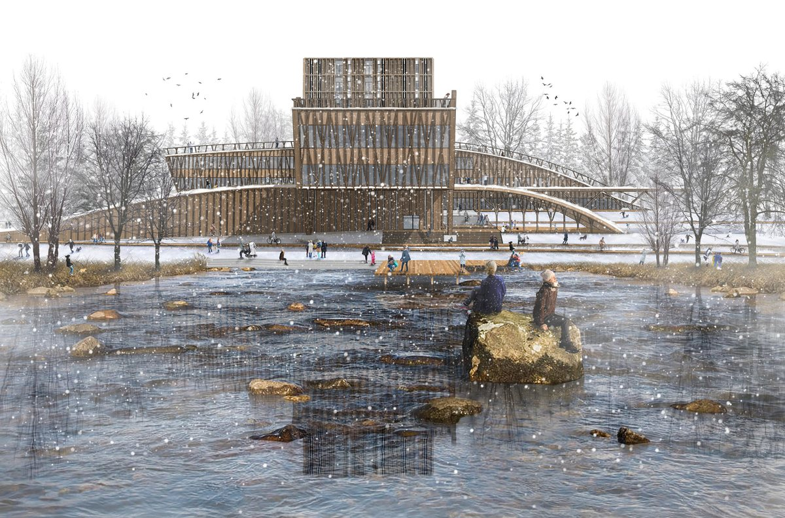
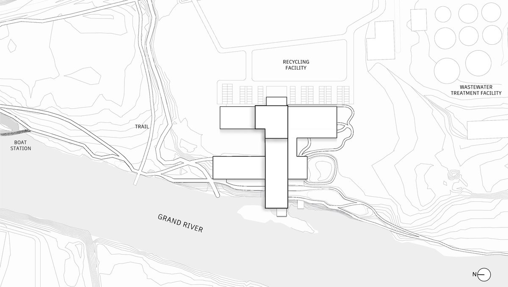
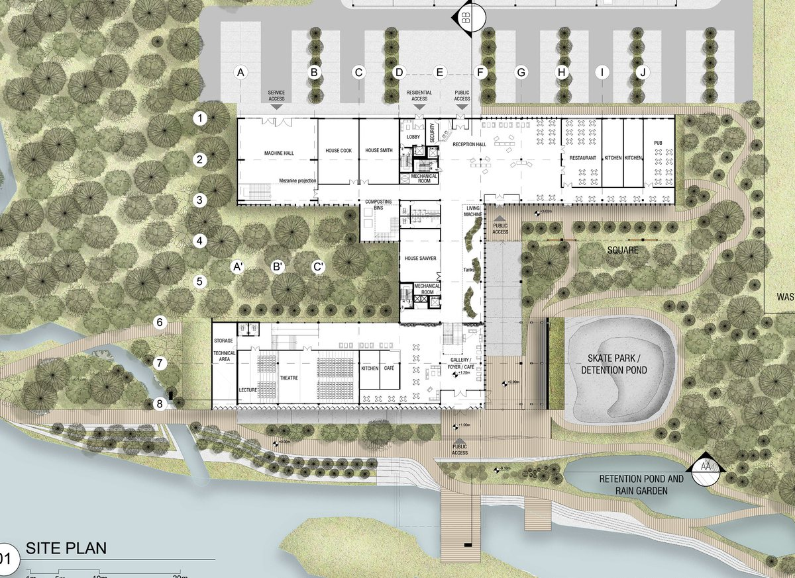
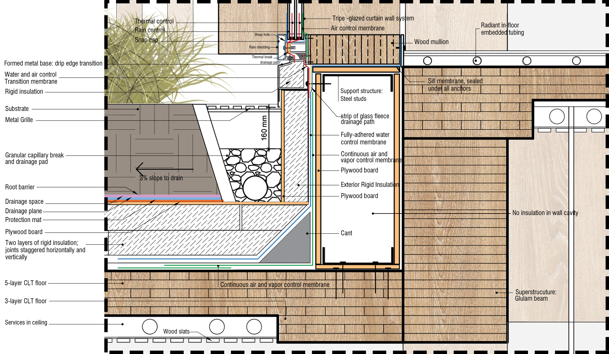
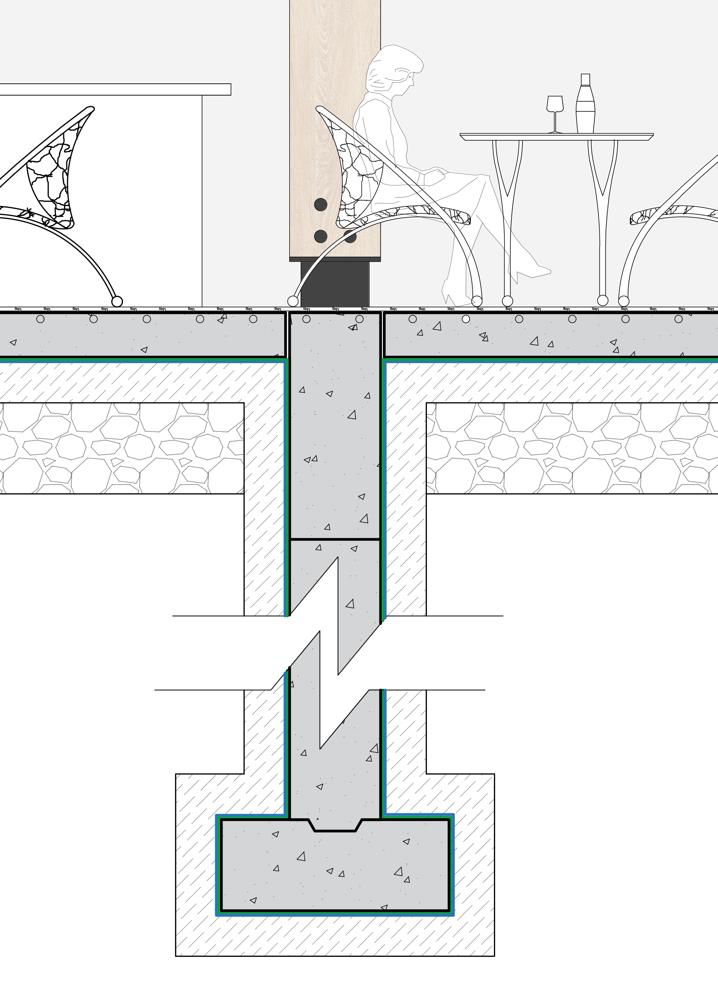
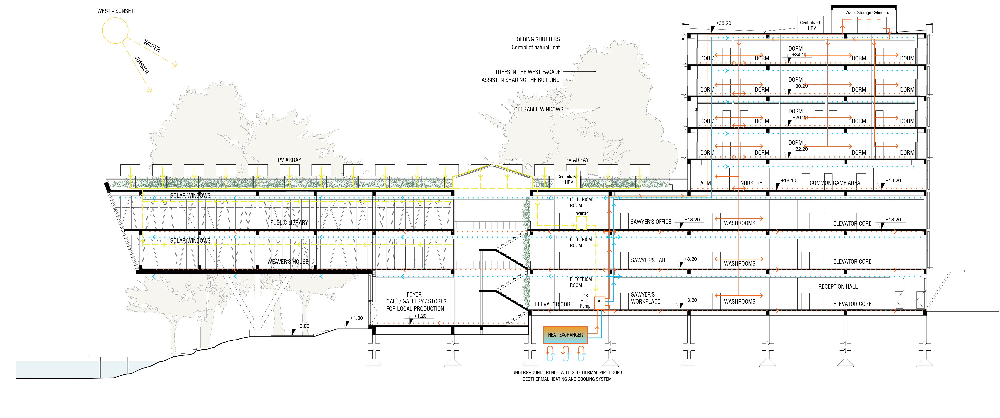

Academic · 2021
Biomorphosis
A nature-based Mechanics Institute on the Grand River that integrates blue-green infrastructure with circular building systems.
- Location: Cambridge, Ontario
- Timeline: 2021
- Role: Comprehensive building design, systems integration, detailing, plans, sections, and circular resource strategies.
Biomorphosis is a nature-based Mechanics Institute project located on the banks of the Grand River in Cambridge, Ontario. The project grasps onto the Triple Bottom Line approach, seeking to be environmentally, socially and economically sustainable. As a connector between the boat station, the Cambridge to Paris Rail Trail, the Recycling Facility and the Grand River edges, the proposal blends the natural landscape with its programmatic uses. By highlighting permeability between indoors and outdoors, the building facilitates the flow of species in the blue and green infrastructure corridor, providing a source of nutrients to the environment.
The proposal interweaves built and natural tissues on several scales. Its Promenade provides a recreational and educational path that invites the public to experience the building while learning about on-site natural resources recycling. As a Biomimicry strategy, the Mechanics institute imitates nature by recycling rainwater, energy, sewage, waste and even food in a circular approach. These integrated building systems are inserted in closed loops to generate zero waste, allowing the building to provide more to the environment than it takes away. Hence, Biomorphosis not only does not harm nature but it creates a symbiosis with the surrounding natural landscape, reconnecting the built and natural environments.











Related projects
Explore adjacent work

WaterWoven
A master plan for flood-resilient, evolutionary amphibious housing and green infrastructure in the Roncador River region.

Denver's Missing Middle
An evolutionary mixed-income townhouse community for Denver's Globeville neighborhood, designed around modular bays, live/work options, and shared outdoor amenities.

Waterloo Centerpiece
A high-density mixed-use district with seven buildings, thirteen towers, pedestrian-oriented streets, green spaces, and transit connectivity.